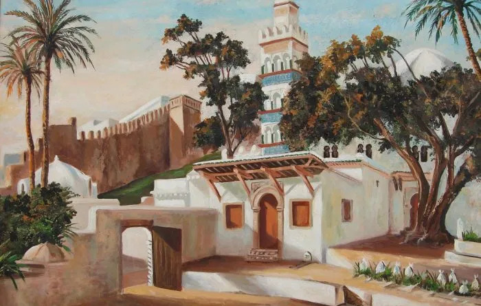

Palais de la princesse Khadidja, Dar el Bakri ou encore Palais de Khdaoudj el Amiya, autant de
noms donnés à ce monument historique planté au cœur de la Casbah d’Alger, un lieu incontournable qui
renferme autant d’objets et de légendes du patrimoine algérois.
La belle princesse et le miroir
Khdaoudj nom affectif de Khadija était la fille cadette de Hassan Kheznadji, une jeune princesse
que la nature avait largement gâtée. Elle était la fille adorée de Hassan Kheznadji, le trésorier du
puissant et richissime Dey Mohamed Ben Othman.
La légende raconte que la princesse Khadidja ou Khedaoudj el amiya (l’aveugle) était d’une rare beauté.
Elle passait le plus clair de son temps devant sa glace se contemplant et admirant son charme que l’on
disait hors du commun. Elle changeait de tenue et de coiffure plusieurs fois par jour, corrigeant une
imperfection ou redressant une mèche rebelle qui ferait offense à cette apparence qu’elle voulait
unique.
Le maquillage était, de toute évidence, trié et savamment choisi pour rehausser encore plus ses traits.
Son narcissisme allait grandissant tant elle se trouvait belle au-delà de ce que l’on peut décrire. Son
souci du détail, qui la maintient rivée à son miroir, lui fit perdre la vue, dit-on.
La Zaouia Sidi Abderrahmane
Le mausolée du Saint patron d’Alger

"Le mausolée du saint patron d'Alger"
La mosquée Sidi Abderrahmane est une mosquée de la Casbah d'Alger datant du XVIIe siècle. Bâtie
vers
1621,c'est une petite mosquée et mausolée (koubba) dédiée au penseur et théologien Sidi Abderrahman
et-Thaâlibi (1384-1471). La mosquée à proprement parler date de 1696 ; elle est construite autour du
tombeau du théologien dans l'enceinte de la Zaouïa de Sidi Abderrahmane.
Sidi Abderrahmane Ethaâlibi
Sidi Abderrahmane ben Mohamed ben Makhlouf Al-Thaâlibi (de son vrai nom Ibn Zeïd Ibn Makhlouf
Abderrahmane Al Thaâlibi – de la tribu des Thaâlba) est le Saint patron de la ville d’Alger.
Né en 1384 aux Issers, en kabylie, dans une famille d’intellectuels, il est un penseur et théologien
musulman. Aussi, il côtoya les plus grands docteurs de son temps comme Abi Zeyd el Waghlissi, Abu Kassam
el Mashdalî, Abi Kassem el Boughzalî ou Mohamed ibn Khalf el Oubay durant ses nombreux voyages d’étude
en Orient avant de revenir s’installer, en 1414, à Alger où on lui confia la magistrature suprême (Cadi)
de la ville.
Il a commencé ses études aux Issers avant de se rendre, très jeune, à Béjaïa en 1399, qui était au début
du quinzième siècle un centre religieux, pour y poursuivre ses études, et ce, à l’age de 15 ans. De là,
en 1406, il s’est rendu à Tunis puis en Égypte toujours pour approfondir ses connaissances. Il est
également allé en Turquie et en Syrie et a accompli son pèlerinage aux lieux saints de l’islam.
Il est le fondateur de l’école Thaalibiya où divers enseignements étaient prodigués (histoire,
littérature, Islam, doctrines, interprétation…).